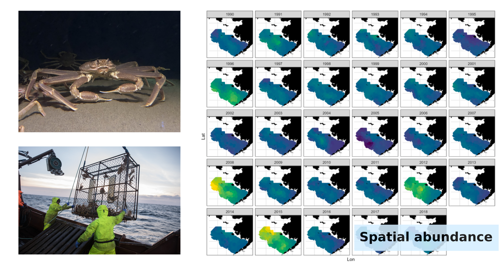
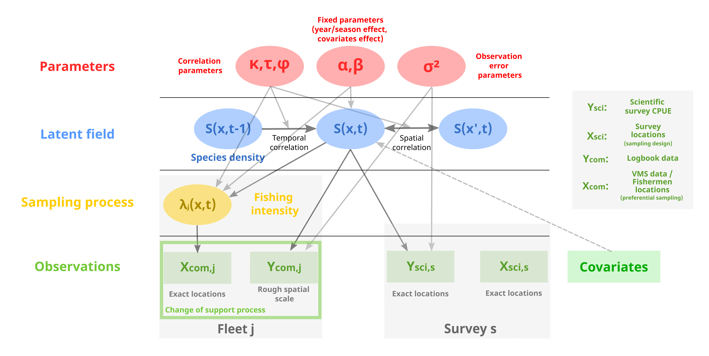
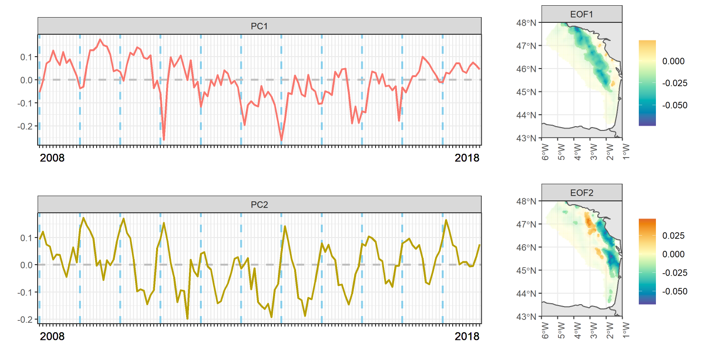

Research interests
Modeling ecological and environmental processes in both space and time is critical to address the current challenges raised by global change.
For instance, mapping species distribution in space and time is a key challenge for conservation. Typically, such information is crucial to identify essential habitats or biodiversity hotspots and to design protected areas.
Identifying where and when urban areas are vulnerable to overheating is critical to adapt urban planning and ensure a better cooling of cities in response to climate change.
Thanks to citizen science and declarative data, a massive amount of data is becoming available to address these challenges at an unprecedented spatio-temporal resolution.
My research seeks to develop spatio-temporal statistical methods to integrate these datasets and provide the knowledge for tackling these practical issues.
Integrating all these datasets requires tackling strong methodological issues. Combining multiple and heterogeneous datasets in a single statistical framework is a first challenge, which is referred to as integrated modeling in ecology. Also, the data to be integrated do not necessarily follow a well-defined sampling plan, and accounting for potential sampling bias is key in providing reliable inference of the process under study. Data are also often available at a rough scale, while the process under study is required to be available at a fine scale. This is usually referred to as a change of support problem (or change of scale). Note that I adopt the hierarchical formalism to integrate the different data sources and handle the distinct source of bias that arise from the data.
When all the data are integrated, they give access to a huge amount of information (i.e. spatial information available over large spatial domains and long time period). Providing a low rank representation of the process of interest is pivotal to identify the main mechanisms shaping the process under study (dimension-reduction).
In the few sections below, I present the different axes of my research work. At this point, my research applications have focused on ecological applications and specifically species distribution modeling (with a specific emphasis on fish distribution). As an associate professor in the geography group of the Lab-STICC, I am broadening my research scope to environmental topics, particularly the interactions between climate and territorial spatial planning.

Handling preferential sampling
Inferring ecological or environmental processes (e.g. species spatio-temporal distribution) can be done through diverse source of data some of which do not necessarily follow a standardized sampling plan (opportunistic sampling). In some cases, the sampling agents target areas where they know the variable under study is high. The typical example is the case of fishermen that target areas where fish biomass is higher. In such case, the sampling is called preferential. Developing methods that handle preferential sampling is a critical issue to provide unbiased predictions of the process under study.
Since my PhD, I have been developing an integrated spatio-temporal hierarchical model to map fish species distribution. It accounts for preferential sampling to integrate massive commercial catch declaration data and standardized fine-scale scientific survey data.
You’ll find some description of this approach in the following references:
Alglave et al. (2022) for a spatial version of the framework.
Alglave et al. (2023) for a spatio-temporal version of the framework.
Handling change of support
In addition to preferential sampling, these massive datasets are often available at a rough spatio-temporal scale while the process of interest must be inferred at a fine scale. This is typically a change of support problem (or change of scale problem). Spatio-temporal statistical models need to account for change of support to provide reliable predictions of the process under study.
I developed a statistical approach handling change of support for complex environmental data (zero-inflated data with heavy tails). It allows to combine (massive) areal-level data and point-level data to map species distribution. It has been applied on commercial catch declarations data (defined at the scale of 0.5° x 1° ICES rectangles) to predict fish distribution at a fine scale.
- Alglave et al. (under review) for a model accounting for change of support.
Integrating the different data sources
Once the different sources of bias have been identified, all the datasets can be combined in a single hierarchical spatio-temporal model.
I’m currently working on an integrated hierarchical spatio-temporal model that accounts for both change of support and preferential sampling. It is the basis for a generic integrated hierarchical model aiming at combining heterogeneous datasets for ecological and environmental applications.

Dimension reduction for spatio-temporal data
Once integrated, all these data sources give access to a huge amount of spatial information over long time series (e.g. species distribution on large spatial domain that cover a wide temporal span). Methods to reduce the dimension of these data are critical to analyse and interpret such data. Empirical Orthogonal Functions (EOFs) are the keystone method for reducing the dimension of spatio-temporal data.
In my research, I intend to adapt these methods to address ecological issues (e.g. extend these methods to the multivariate case, set constrains on EOFs to ensure ecological interpretability).
Here are some references to my work:
Alglave et al. (under review) for an introduction to the basics of EOFs and some statistical development of EOFs to address specific ecological issues.
Alglave et al. (2024) for an application of EOFs to identify essential habitats from a spatio-temporal species distribution model.
